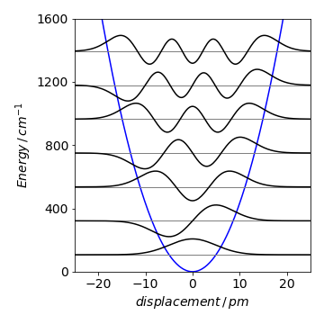

Linear equations with variable coefficients¶
8.1 Linear equations with variable coefficients¶
A more difficult equation to solve than those met previously is
where the coefficients \(a\), \(b\), \(c\) are functions of \(x\). This equation is usually put into the form
by dividing through by \(a(x)\). The general method to use is the variation of parameters, because this can be applied to all differential equations. However, it is quite complicated to use and specialized texts should be consulted (Jeffery 1990; Bronson 1994; Aratyn & Rasinariu 2006). There are, however, at least two methods that can still be used: the main one is to solve the equation as a series expansion and the second reduces the equation to a simpler one, but this can be used only in certain cases.
8.1 Reduction to simpler forms by change of variable and substitution¶
(i) Substitution¶
Sometimes a simple substitution can produce constant coefficients, but success in this depends very much on the exact form of the equation. The equation
can be simplified with \(u = \sin(x)\). The derivatives are \(du/dx = \cos(x), \; d^2u/dx^2 = -\sin(x)\) and as \(\displaystyle \frac{dy}{dx}=\frac{dy}{du}\frac{du}{dx}\) then \(\displaystyle \frac{dy}{dx}=\cos(x)\frac{dy}{du}\) and
substituting into the differential equation produces \(\displaystyle \frac{d^2y}{du^2}+ay=0\) which is readily solved by standard methods to find \(y\) in terms of \(u\). Notice that if the \(\cos^3(x)y\) term in the original equation was replaced by \(\cos(x)y\), then the equation produced is not as simple and is
(ii) Euler or Cauchy eqns.¶
Equations of the particular type \(\displaystyle x^3\frac{d^3y}{dx^3}+ax^2\frac{d^2y}{dx^2}+bx\frac{dy}{dx}+cy=f(x)\)
where terms in \(x\) have the same power as the differential are called Euler’s or Cauchy’s equation and can be simplified with the substitution \(\displaystyle x = e^{-z}\). The derivative is \(\displaystyle dz/dx = e^{−z}\) and if \(D \equiv d/dz\) then
The last derivative here was obtained as \(\displaystyle \frac{d^2y}{dx^2}=\frac{d}{dz}\left(\frac{dy}{dz}\frac{dz}{dx} \right)\frac{dz}{dx}\)
and using the product rule and \(\displaystyle \frac{d}{dx}\frac{dz}{dx}\equiv\frac{d}{dx}\)
The different derivatives can be written down as
and used to simplify the differential equation. Note that the right-hand side has derivatives in \(dy/dz\).
(iii) Using derivatives¶
To solve the equation \(\displaystyle x^2\frac{d^2y}{dx^2}+2x\frac{dy}{dx}-y=0\)
first simplify this to \(\displaystyle (D^2+D-1)y=0\) using the derivatives alone. The characteristic equation has roots \(\displaystyle \frac{\sqrt{5}-1}{2},\;\frac{-\sqrt{5}-1}{2}\). However, the operator \(D\) is a function of \(z\) not of \(x\), hence, the solution is a function of \(z\), giving the solution
where \(A\) and \(B\) are constants determined by the initial conditions. As \(\displaystyle x = e^z\) or \(z = \ln(x)\), the solution becomes \(\displaystyle y=Ae^{(\sqrt{5}-1)\ln(x)/2}+Be^{(-\sqrt{5}-1)\ln(x)/2}\) which can be simplified to
(iv) Special form¶
If the equation can be put into the form, \(\displaystyle \frac{d^2y}{dx^2}+P(x)\frac{dy}{dx}+Q(x)y = 0 \)
then it can be reduced by the transformation \(y = uv\) where
The equation becomes
and the final solution is \(y=uv\).
(v) Special form¶
The equation \(\displaystyle \frac{d^2 y}{dx^2}+x\frac{dy}{dx}+(x-1)y = 0\)
can be solved with this method if \(\displaystyle v=e^{-(1/2)\large{\int}xdx}= e^{-x^2/4}\)
and \(\displaystyle w=3/2+x^2/4-x\) which produces the equation with which to find \(u\) and which is,
8.2 Series solution of differential equations¶
While many types of equations can be solved using the methods described so far, there are a number of problems whose equations can only be solved by a series expansion. These are often different forms of the Schroedinger equation, examples of which are the quantum harmonic oscillator and the radial and angular solutions to the hydrogen atom.
While the series solution method will be described in general, in quantum mechanics and in some other problems, the equations often have a form whose solution is well known because the equation has a specific name. The harmonic oscillator is solved using Hermite’s differential equation and the hydrogen atom requires Legendre’s and Laguerre’s equations. Other commonly used equations are named after Helmholtz, Laplace, and Bessel.
Many functions can be expanded as a power series that has the form
with constants \(a_0, a_1\), etc. as described in Chapter 5.
By taking derivatives of \(y\) based on this expansion, the differential equation can be reconstructed in terms of the powers of \(x\) and these constants. To find the constants, the powers of \(x\) are collected together and the resulting group of constants solved assuming that each group of them is zero. What results is a recursion formula with which to calculate the constants and so the equation is solved without any formal integration. It is assumed that the solution can be found with this method, because this is ‘usually’ the case for problems in chemical physics. There is a simple way to check if a series solution is possible and if not, a related method due to Frobenius can be tried in these cases.
(i) The basic series method¶
The basic series method is illustrated with the equation
and the solution is assumed to have the form of equation (38). The strategy is
(a)\(\quad\) to differentiate the series solution, and substitute the results into the differential equation;
(b)\(\quad\) collect together coefficients with the same power of \(x\) and set each result to zero;
(c)\(\quad\) find a recursion equation in the coefficients \(a_0,\; a_1, \cdots\) using the initial conditions as the starting points.
step (a) The differential equation is formed out of the series solution by taking the derivatives. These are
and the \(n\) - 2, \(n\) - 1 and nth terms are tabulated below as these are needed later on. Notice that these derivatives are the same for all differential equations solved by the expansion in (38). These coefficients are shown in the table and terms that are useful in other equations are also shown.
step (b) The next step is to substitute these derivatives into the differential equation and then to group all the coefficients with \(x^0,\; x^1,\; x^2,\; x^3 \cdots\) together and make each group zero. The groups of coefficients for each power of x must be zero, as the differential equation is itself equal to zero. For this particular equation, substituting produces
Grouping the coefficients gives
step (c) The recursion formula for the \(x^n\) term is \(\displaystyle a_{n+2} =-\frac{(n+1)a_n}{(n+1)(n+2)}\). The first two coefficients are \(a_0,\;a_1\) and the other coefficients are expressed in terms of these as
The solution is therefore,
The two solutions are independent of one another, and the even powered series is the expansion of \(\displaystyle e^{-x^2/2}\), while the odd series is not so easily identified. The coefficients are determined by the initial conditions and, if \(y(0) = a_0\) and \(dy/dx \)= 0 at \(x\) = 0, then the solution is \(\displaystyle y = a_0e^{-x^2/2}\).
(ii) Example¶
The equation is \(\displaystyle \frac{d^2y}{dx^2}+(\alpha-\beta x^2)y=0\) and following the previous calculation, the recursion equation is
and is not valid when \(n\) is 0 or 1 because \(a_{-2}\) and \(a_{-1}\) are not defined. The coefficients of the first two terms in the expansion must then be examined. These are \(\displaystyle 2a_2+\alpha a_0\) and \(\displaystyle 6a_3+\alpha a_1 =0\) from which \(a_2\) and \(a_3\) can be found in terms of \(a_0\) and \(a_1\) and these then used as the starting points for the recursion formula. The series solution can be obtained using recursion. The first few terms are
and the solution \(\displaystyle y = a_0 + a_1x - \frac{1}{2}\alpha a_0x^2-\frac{1}{6}\alpha a_1x^3+\left( \frac{1}{24}\alpha^2a_0+\frac{1}{12}\beta a_0 \right)x^4+\cdots\).
There are two series in the result; one with terms in \(a_0\) and the other in \(a_1\). These are independent solutions.
(iii) The Hermite equation¶
The Hermite equation is important because it leads to the solution of the Schroedinger equation for the quantum mechanical harmonic oscillator. This is discussed at the end of this section but first a method of solution is determined. The equation has the form
where \(\gamma\) is a real number, Solving as a series leads to the coefficients
The recursion is therefore
and evaluating the coefficients gives the series
These series form the Hermite polynomials when \(\gamma\) is a positive integer. For example when \(\gamma\) = 3 the odd power series terminates to give \(\displaystyle y_3=a_1\left(x-\frac{2}{3}x^3 \right)\) and when \(\gamma\) = 4 the even power series terminates and is \(\displaystyle y_4=a_0\left(1-4x^2+\frac{4}{3}x^4 \right) \).
Each series is limited to a few terms because of the way the coefficients are formed. The first few Hermite polynomials are
and choosing the constants as
with \(\gamma\) as an even integer and
with \(\gamma\) as an odd integer, converts the series solution to the differential equation into the sum of two Hermite polynomials.
The general solution can then be written as
where \(c_1\) and \(c_2\) are two new constants that are determined by the initial conditions.
The equation
with \(\gamma\) as a constant is related to the Hermite equation if \(\displaystyle y=ve^{-x^2/2}\), where \(v\) is a function of \(x\), then the second derivative is
and substituting this into eqn (40) and simplifying this becomes \(\displaystyle \frac{d^2v}{dx^2}-2x\frac{dv}{dx}+2\gamma v=0\) which is identical to (39). The solutions of (40) are therefore Hermite polynomials multiplied by the Gaussian \(\displaystyle e^{−x^2/2}\).
The Schroedinger equation for the harmonic oscillator can be written as
where k is the force constant related to the frequency as \(\displaystyle \omega= \sqrt{k/m}\). The equation can be simplified to
with the abbreviations \(\displaystyle a = 2mE/\hbar^2\) and \(\displaystyle b^2 = mk/\hbar^2\). Next, the substitution \(z =bx\) is used to make the equation similar to (40). The solutions are Hermite polynomials multiplied by \(\displaystyle \exp(−z^2/2)\) and these have the characteristic form of the harmonic oscillator wavefunctions. These decay exponentially to zero when \(z\) has a large positive or negative value but oscillate near to zero. The different wavefunctions are found by substituting \(E = \hbar\omega(n + 1/2)\) for each quantum number \(n\). The next figure (19a) shows some wavefunctions for parameters corresponding to the iodine molecule, assuming that it has a harmonic potential. Of course any diatomic molecule does not have a harmonic potential since all real molecules must dissociate into their respective atoms if given enough energy, but the harmonic potential is a good approximation at low energy.

Figure 19a. harmonic oscillator wavefunctions assuming a harmonic potential. The frequency is 214.5 cm\(^{-1}\) and the force constant \(172\) N/m. The levels have quantum numbers \(n=\) 0, 1, 2,\(\cdots\).
8.3 Checking whether a series solution is possible¶
A solution is usually expanded as a series about \(x\) = 0; therefore, the first thing to check is whether the series method is applicable. This means examining the differential equation to ensure that \(x\) = 0 is analytic, hence not singular, which in turn means that \(x\) = 0 does not produce infinity when substituted into the equation. The general equation is
If the equation is \(\displaystyle \frac{d^2y}{dx^2}+\frac{dy}{dx}+y=0\)
then this is analytic at \(x\) = 0, as \(P\) and \(Q\) are both 1.
The equation \(\displaystyle \frac{d^2y}{dx^2}+\frac{x}{x-1}\frac{dy}{dx}+\frac{1}{x-1}y=0\)
is also analytic at \(x\) = 0, and an expansion about 0 is possible. The point \(x\) = 1 is singular, and the function \(1/(x - 1)\) is then not defined, so the series expansion will not be possible here and the series solution is valid only in the range -1 \(\lt x \lt\) 1. In contrast the equation
can be expanded, because the \(x(x - 1)\) and \((x - 1)\) are polynomials and every point is normal.
Bessel’s equation is
where \(n\) is a constant and when rearranged is
so has a singular point at \(x\)=0. In this case, the equation can be shown to have solutions \(\displaystyle y=x^m \sum \limits_{k=0}^\infty a_kx^k\) and where \(a_0 \ne\) 0. Using this series is often called Frobenius’ method and both the index \(m\) and coefficients \(a_k\) have to be determined. The method is very similar to that already described and is given in more advanced textbooks (Boas 1983; Jeffery 1990; Bronson 1994; Aratyn & Rasinariu 2006).